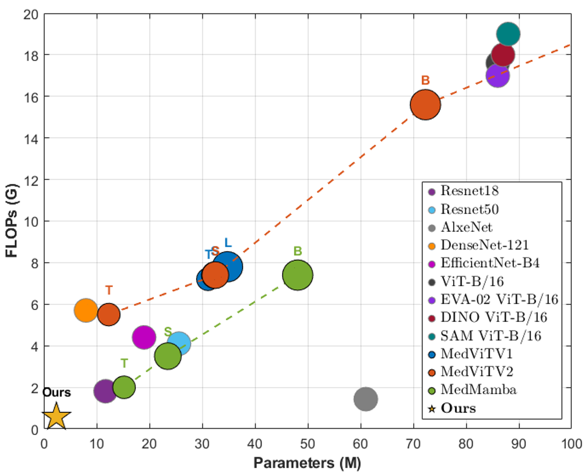
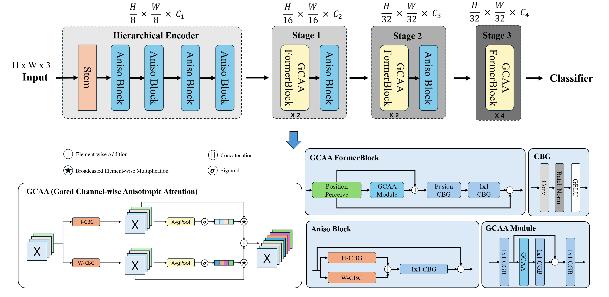

A Directional Decomposition Approach for Lightweight Medical Image Classification
EfficientMedFormer is A Medical Image Diagnosis Model for Edge Devices Incorporating Low-Computational Directional Decomposition Attention.

Figure 1: A comparative analysis of computational efficiency among commonly used medical image classification models has revealed that the proposed EfficientMedFormer offers significant advantages. When compared to established models like MedMamba and MedViT, EfficientMedFormer requires substantially fewer parameters and floating point operations (FLOPs), demonstrating superiority in terms of computational efficiency.
Medical artificial intelligence is advancing rapidly and contributing significantly to the early de tection and accurate diagnosis of diseases. Although medical image classification is crucial in this diagnostic process, its application in real clinical environments demands high accuracy and computational efficiency. To address these requirements, this paper proposes EfficientMedFormer, a novel lightweight hybrid architecture that integrates an anisotropic convolutional block, based on the directional decomposition principle with a new gated channel-wise anisotropic attention module within a progressive hierarchical structure, effectively fusing local and global features. Initially, in the early stages of the model, the anisotropic convolutional block decomposes standard convolutions into directional one-dimensional convolutions. This approach significantly reduces the computational cost while maintaining a wide receptive field. Subsequently, in the later stages, the gated channel-wise anisotropic attention module enhances conventional channel attention by independently extracting and directly gating contextual information along the height and width directions. This dynamically reweights the importance of each channel, effectively preserving spatial information and modeling global relationships. The proposed model achieves comparable or superior performance to widely used models in the medical domain across various classification tasks on the MedMNIST v2, PAD-UFES-20, Kvasir, and Brain Tumor MRI datasets, achieving a maximum accuracy of 99%. Notably, EfficientMedFormer attains this top-tier performance with merely 2.39M parameters and 0.28 GFLOPs, while demonstrating an exceptional inference latency of 74.6 ms on an Orange Pi 5B edge device. These quantitative results underscore the high practicality and generalizability of the proposed model, thereby advancing the clinical applicability of medical artificial intelligence.

Figure 2: The model adopts a hybrid structure comprising a hierarchical encoder for initial feature extraction and multiple stages of Global-Context-Guided Anisotropic Attention Former (GCAA FormerBlock) for global context modeling. The detailed structures of the core components the Aniso Block, the GCAA FormerBlock, and the central GCAA mechanism are visualized.
| Methods | PathMNIST | ChestMNIST | DermaMNIST | OCTMNIST | PneumoniaMNIST | RetinaMNIST | ||||||
|---|---|---|---|---|---|---|---|---|---|---|---|---|
| ACC | AUC | ACC | AUC | ACC | AUC | ACC | AUC | ACC | AUC | ACC | AUC | |
| ResNet-18 | 0.909 | 0.989 | 0.947 | 0.773 | 0.754 | 0.920 | 0.763 | 0.958 | 0.864 | 0.956 | 0.493 | 0.710 |
| ResNet-50 | 0.892 | 0.989 | 0.948 | 0.773 | 0.731 | 0.912 | 0.776 | 0.958 | 0.884 | 0.962 | 0.511 | 0.716 |
| DenseNet-121 | 0.957 | 0.997 | 0.948 | 0.822 | 0.847 | 0.962 | 0.866 | 0.992 | 0.889 | 0.974 | 0.557 | 0.729 |
| EfficientNet-B4 | 0.926 | 0.994 | 0.947 | 0.782 | 0.763 | 0.918 | 0.825 | 0.989 | 0.871 | 0.967 | 0.524 | 0.738 |
| EdgeNeXt-XS | 0.967 | 0.998 | 0.951 | 0.501 | 0.800 | 0.940 | 0.939 | 0.996 | 0.942 | 0.991 | 0.553 | 0.712 |
| MobileNetv4-S | 0.965 | 0.998 | 0.951 | 0.531 | 0.794 | 0.935 | 0.939 | 0.996 | 0.952 | 0.993 | 0.553 | 0.713 |
| MobileViTv2-0.75 | 0.968 | 0.998 | 0.951 | 0.514 | 0.808 | 0.945 | 0.932 | 0.996 | 0.942 | 0.993 | 0.563 | 0.768 |
| ViT-B/16 | 0.958 | 0.996 | 0.947 | 0.808 | 0.821 | 0.962 | 0.903 | 0.991 | 0.861 | 0.963 | 0.550 | 0.785 |
| CLIP ViT-B/16 | 0.925 | 0.994 | 0.947 | 0.777 | 0.753 | 0.925 | 0.868 | 0.988 | 0.838 | 0.959 | 0.503 | 0.708 |
| MedViTV1-T | 0.938 | 0.994 | 0.956 | 0.786 | 0.768 | 0.914 | 0.767 | 0.961 | 0.949 | 0.993 | 0.534 | 0.752 |
| MedViTV1-S | 0.942 | 0.993 | 0.954 | 0.791 | 0.780 | 0.937 | 0.782 | 0.960 | 0.961 | 0.995 | 0.561 | 0.773 |
| MedViTV2-T | 0.959 | 0.998 | 0.963 | 0.791 | 0.781 | 0.931 | 0.927 | 0.993 | 0.951 | 0.995 | 0.547 | 0.761 |
| MedViTV2-S | 0.965 | 0.998 | 0.964 | 0.803 | 0.792 | 0.946 | 0.942 | 0.994 | 0.965 | 0.996 | 0.562 | 0.780 |
| MedViTV2-B | 0.970 | 0.999 | 0.964 | 0.815 | 0.808 | 0.948 | 0.944 | 0.996 | 0.969 | 0.996 | 0.575 | 0.783 |
| MedMamba-T | 0.953 | 0.997 | - | - | 0.779 | 0.917 | 0.918 | 0.992 | 0.899 | 0.965 | 0.543 | 0.747 |
| MedMamba-S | 0.955 | 0.997 | - | - | 0.758 | 0.924 | 0.929 | 0.991 | 0.936 | 0.976 | 0.545 | 0.718 |
| MedMamba-B | 0.964 | 0.999 | - | - | 0.757 | 0.925 | 0.927 | 0.996 | 0.925 | 0.973 | 0.553 | 0.715 |
| EVA-02 ViT-B/16 | 0.959 | 0.997 | 0.947 | 0.765 | 0.779 | 0.932 | 0.874 | 0.989 | 0.827 | 0.935 | 0.544 | 0.743 |
| DINO ViT-B/16 | 0.943 | 0.995 | 0.947 | 0.789 | 0.813 | 0.965 | 0.850 | 0.985 | 0.840 | 0.966 | 0.532 | 0.783 |
| SAM ViT-B/16 | 0.960 | 0.997 | 0.947 | 0.754 | 0.774 | 0.926 | 0.873 | 0.991 | 0.838 | 0.945 | 0.513 | 0.717 |
| Ours | 0.948 | 0.993 | 0.947 | 0.517 | 0.826 | 0.957 | 0.944 | 0.996 | 0.969 | 0.996 | 0.578 | 0.785 |
| Methods | BreastMNIST | BloodMNIST | TissueMNIST | OrganAMNIST | OrganCMNIST | OrganSMNIST | ||||||
|---|---|---|---|---|---|---|---|---|---|---|---|---|
| ACC | AUC | ACC | AUC | ACC | AUC | ACC | AUC | ACC | AUC | ACC | AUC | |
| ResNet-18 | 0.833 | 0.891 | 0.963 | 0.998 | 0.681 | 0.933 | 0.951 | 0.998 | 0.920 | 0.994 | 0.778 | 0.974 |
| ResNet-50 | 0.828 | 0.889 | 0.963 | 0.998 | 0.683 | 0.933 | 0.940 | 0.997 | 0.913 | 0.993 | 0.782 | 0.975 |
| DenseNet-121 | 0.873 | 0.896 | 0.990 | 0.999 | 0.740 | 0.952 | 0.967 | 0.998 | 0.937 | 0.996 | 0.828 | 0.981 |
| EfficientNet-B4 | 0.745 | 0.708 | 0.974 | 0.999 | 0.693 | 0.933 | 0.951 | 0.997 | 0.906 | 0.994 | 0.763 | 0.973 |
| EdgeNeXt-XS | 0.884 | 0.893 | 0.990 | 0.999 | 0.717 | 0.941 | 0.902 | 0.992 | 0.915 | 0.993 | 0.815 | 0.982 |
| MobileNetv4-S | 0.886 | 0.903 | 0.989 | 0.999 | 0.731 | 0.940 | 0.914 | 0.995 | 0.927 | 0.994 | 0.828 | 0.982 |
| MobileViTv2-0.75 | 0.873 | 0.895 | 0.991 | 0.999 | 0.734 | 0.943 | 0.910 | 0.993 | 0.917 | 0.993 | 0.828 | 0.982 |
| ViT-B/16 | 0.837 | 0.861 | 0.984 | 0.999 | 0.728 | 0.948 | 0.969 | 0.999 | 0.940 | 0.997 | 0.825 | 0.983 |
| CLIP ViT-B/16 | 0.801 | 0.775 | 0.968 | 0.998 | 0.662 | 0.922 | 0.952 | 0.998 | 0.923 | 0.996 | 0.786 | 0.977 |
| MedViTV1-T | 0.897 | 0.923 | 0.965 | 0.998 | 0.673 | 0.931 | 0.951 | 0.998 | 0.912 | 0.993 | 0.778 | 0.973 |
| MedViTV1-S | 0.901 | 0.925 | 0.965 | 0.998 | 0.686 | 0.938 | 0.952 | 0.998 | 0.920 | 0.994 | 0.786 | 0.975 |
| MedViTV2-T | 0.882 | 0.944 | 0.979 | 0.999 | 0.696 | 0.936 | 0.958 | 0.998 | 0.935 | 0.994 | 0.824 | 0.985 |
| MedViTV2-S | 0.895 | 0.947 | 0.985 | 0.999 | 0.705 | 0.939 | 0.966 | 0.999 | 0.950 | 0.997 | 0.839 | 0.986 |
| MedViTV2-B | 0.904 | 0.949 | 0.985 | 0.999 | 0.711 | 0.942 | 0.969 | 0.999 | 0.953 | 0.998 | 0.844 | 0.987 |
| MedMamba-T | 0.853 | 0.825 | 0.978 | 0.999 | - | - | 0.946 | 0.998 | 0.927 | 0.997 | 0.819 | 0.982 |
| MedMamba-S | 0.853 | 0.806 | 0.984 | 0.999 | - | - | 0.959 | 0.999 | 0.944 | 0.997 | 0.833 | 0.984 |
| MedMamba-B | 0.891 | 0.849 | 0.983 | 0.999 | - | - | 0.964 | 0.999 | 0.943 | 0.997 | 0.834 | 0.984 |
| EVA-02 ViT-B/16 | 0.829 | 0.830 | 0.984 | 0.999 | 0.703 | 0.939 | 0.961 | 0.998 | 0.940 | 0.996 | 0.816 | 0.980 |
| DINO ViT-B/16 | 0.844 | 0.863 | 0.979 | 0.999 | 0.703 | 0.940 | 0.961 | 0.999 | 0.936 | 0.997 | 0.817 | 0.983 |
| SAM ViT-B/16 | 0.816 | 0.785 | 0.985 | 0.999 | 0.714 | 0.944 | 0.956 | 0.997 | 0.927 | 0.993 | 0.820 | 0.977 |
| Ours | 0.904 | 0.905 | 0.991 | 0.999 | 0.751 | 0.953 | 0.971 | 0.999 | 0.977 | 0.998 | 0.878 | 0.992 |
| Model | Params(M) | FLOPs(G) | CPU (ms) PC |
CPU (ms) Raspberry Pi 5B |
CPU (ms) Orange Pi 5B |
CPU (ms) IPHONE 14 PRO |
|---|---|---|---|---|---|---|
| ResNet-18 | 11.1 | 1.81 | 10.1 | 98.8 | 132.1 | 21.9 |
| ResNet-50 | 23.5 | 4.11 | 20.9 | 281.2 | 391.4 | 29.7 |
| DenseNet-121 | 6.91 | 2.88 | 24.1 | 253.6 | 299.7 | 33.4 |
| EfficientNet-B4 | 17.5 | 1.50 | 24.9 | 301.5 | 261.8 | 38.8 |
| MobileNetv4-S | 2.47 | 0.18 | 9.72 | 77.3 | 76.9 | 14.8 |
| EdgeNeXt-XS | 2.14 | 0.41 | 11.7 | 97.6 | 114.2 | 20.1 |
| ViT-B/16 | 85.8 | 16.8 | 68.5 | 564.5 | 932.1 | 47.6 |
| MobileViTv2-0.75 | 2.46 | 0.80 | 13.2 | 153.6 | 169.7 | 25.4 |
| MedViTV1-T | 31.1 | 5.93 | 52.1 | 603.8 | 652.8 | 29.3 |
| MedViTV1-S | 44.4 | 8.41 | 59.6 | 813.7 | 915.1 | 41.6 |
| MedViTV2-T | 11.3 | 1.47 | 1092.1 | 3069.5 | 1682.3 | 37.7 |
| MedViTV2-S | 29.5 | 1.84 | 1163.1 | 3352.3 | 1804.1 | 52.7 |
| Ours | 2.39 | 0.28 | 11.3 | 79.4 | 74.6 | 16.5 |